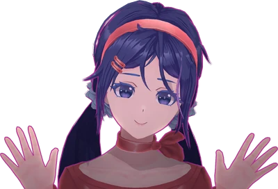

CREDITI
Voglio ringraziare la community di MiSide, e voi che avete avuto il tempo da dedicare a questo portale.
È nato tutto così per caso, ho visto qualcuno fare qualcosa di simile per DDLC e visto che sia Lya che Bongio
volevano giocare a MiSide ho sentito la necessità di racchiudere qui dentro tutti gli easter-egg e segreti
che sono stati trovati, molti se ne troveranno in futuro, ma per ora accontentatevi di questo :D
Ora però è arrivato il tempo dei crediti, le fonti da cui ho preso le informazioni:

MiSide Wiki